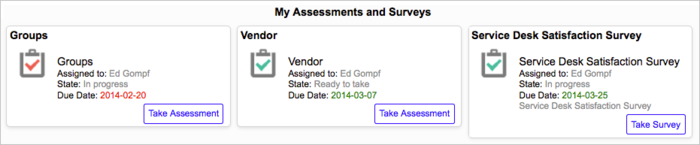
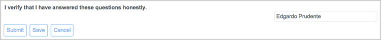

Completing Assessment Questionnaires
| |
Note: This article applies to Fuji. For more current information, see Assessment Questionnaires at http://docs.servicenow.com
The ServiceNow Wiki is no longer being updated. Please refer to http://docs.servicenow.com for the latest product documentation. |
Contents
1 Overview
In the assessment process, users complete assessment questionnaires on topics of interest to provide subjective data for future business decisions. No special role is required to complete an assessment. You are eligible to complete assessments that are assigned to you. For example, you might be expected to evaluate vendors your organization works with, based on traits related to customer service. The system stores your responses so decision makers can compare the performance of the items you evaluate. You and your manager may receive email notifications as reminders of important assessment information.
2 Assessment Notifications
If configured to use email notifications, the system sends the following notifications:
- Notify assessment user: This messages notifies you of an assigned an assessment and includes the type, the due date, and basic instructions. The message also contains a link to the record where you take the assessment.
- Remind assessment user: This message reminds you of the due date if half the time passes and you have not completed the assessment. The message content is the same as the first notification.
- Notify manager assessment is overdue: If you do not complete an assessment by the due date, the system may send a notification to your manager, depending on configuration.
For information about administering these notifications, see Assessment Notifications.
3 Taking an Assessment
Assessments that are assigned to you appear in your assessment and survey queue. The information in this section applies to assessments starting with the Eureka release. If you are using an earlier release, see the previous version information.
The queue displays all assessments and surveys assigned to you that are available for completion. Each assessment or survey appears as a card in the queue. The card contains helpful information, including the assessment name, state, and due date, and a button to launch the questionnaire. Overdue assessments are clearly marked with a red icon and red due date. You must answer every mandatory question, indicated by a red bar, before you can submit the assessment as complete. If you start to take an assessment but cannot complete it, save your responses and return to it later. When you have answered all the questions and are satisfied with the responses, submit the assessment. By default, you cannot modify your answers to an assessment after submission. However, if the administrator has configured an assessment to allow retakes, you can edit your answers and resubmit the questionnaire. Completed assessments configured for retake remain in the queue until their due date and display the Modify Assessment button on the card. The ability to resubmit assessments is available starting with the Fuji release.
To view your queue and take an assessment:
- Navigate to Self-Service > My Assessments & Surveys.
-
- 
-
- Note: Users with the assessment_admin role can display other users' assessments and surveys in addition to their own. Use the Show all and Show assigned to me related links at the bottom of the queue to show and hide assessments and surveys. Click a card assigned to another user to open the associated metric type or survey definition.
-
- On the assessment card, note the due date.
- You may receive email notifications to remind you of the due date, depending on configuration.
- Click Take Assessment to open the questionnaire.
- Assessment questionnaires are arranged in sections: first by record, then by category. Each record appears as a section title. Questions for the record appear below, grouped by category. Each category appears as a subsection below the record name. Click the collapse (
 ) or expand (
) or expand ( ) icon to hide or show the questions in a category, or all the categories and questions for a record. Colored bars indicate the status of each question.
) icon to hide or show the questions in a category, or all the categories and questions for a record. Colored bars indicate the status of each question. -
-

-
- Assessment questionnaires are arranged in sections: first by record, then by category. Each record appears as a section title. Questions for the record appear below, grouped by category. Each category appears as a subsection below the record name. Click the collapse (
- Answer each question to the best of your ability. Point to a question for more information.
- Read any assertions present at the end of the assessment and acknowledge with a signature, if required.
- A signature can require you to select a check box or authenticate your full name, which the system displays in a read-only field. You cannot submit your answers to the assessment until you provide the required signature. Signatures are available starting with the Fuji release.
- 
- Save or submit the assessment.
- Save: Saves your responses without submitting them. You can close the questionnaire and access it later from your queue.
- Submit: Submits the completed assessment when you are finished.
- If prompted, enter your user name and password to verify your full name signature.
- If all the questions are answered with valid values, a success message appears. If the system detects an unanswered mandatory question or invalid response, the assessment is not submitted, and a message appears at the top of the questionnaire explaining the error. Questions with problems are temporarily highlighted.
- To edit your answers and resubmit an assessment that permits retakes, click Modify Assessment.


{kind=link}
{kind=link}
{kind=link}
{kind=link}
{kind=link}
3.1 Taking an Assessment Prior to the Eureka Release
| Click the plus to expand previous version information |
|---|
|
Assessments that are assigned to you appear in your assessment queue as assessment instance records. Each assessment instance record contains information about the assessment, including the state, due date, questions, and a button to launch the questionnaire. You must answer every mandatory question, indicated by a red bar, before you can submit the questionnaire as complete. If you start to take a questionnaire but cannot complete it, save your responses and return to it later. When you have answered all the questions and are satisfied with the responses, submit the questionnaire. To view your queue and take a questionnaire:
|
{kind=link}
{kind=link}
{kind=link}
{kind=link}